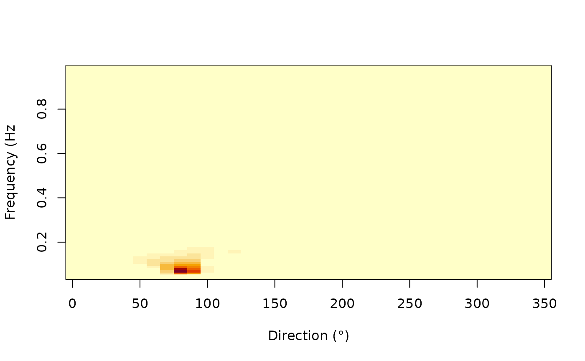

Download the 2D spectrum data from IFREMER ftp
Source:R/spectral_data_download.R
get_2d_spectrum.RdDownload the 2D spectrum data from IFREMER ftp
Value
A list with 9 elements:
- longitude
Longitude
- latitude
Latitude
- frequency1
Lower frequency
- frequency2
Upper frequency
- ef
Surface elevation variance spectral density
- th1m
Mean direction from first spectral moment
- th2m
Mean direction from second spectral moment
- sth1m
Mean directional spreading from first spectral moment
- sth2m
Mean directional spreading from second spectral moment
- freq
Central frequency
- dir
Directionnal bins
- forcings
A data.frame with 6 variables:
- time
Time
- dpt
Depth, positive downward
- wnd
Wind intensity, at 10m above sea level
- wnddir
Wind direction, comes from
- cur
Current intensity, at the surface
- curdir
Current direction, going to
- station
Station name
Examples
spec2D <- get_2d_spectrum("SEMREVO", start = "1994-01-01", end = "1994-02-28")
image(spec2D$dir, spec2D$freq, spec2D$efth[, , 1],
xlab = "Direction (°)",
ylab = "Frequency (Hz"
)
